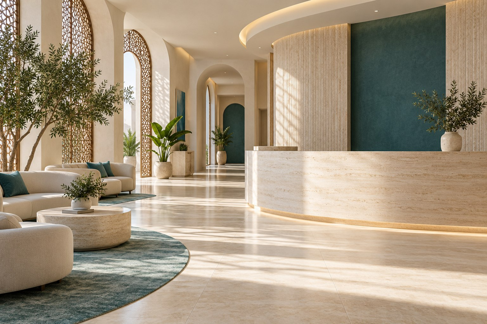

General practice
Service overview, consultation information, and the next step for enquiries.
Clear information, helpful guidance, and a comfortable place to start your visit.
Explore our services
A clear introduction to the clinic’s services, before you get in touch.
Service overview, consultation information, and the next step for enquiries.
A simple guide to the dental services available at the clinic.
Practical information to help families prepare for a visit.
Find opening hours, location, and an easy way to contact the team.